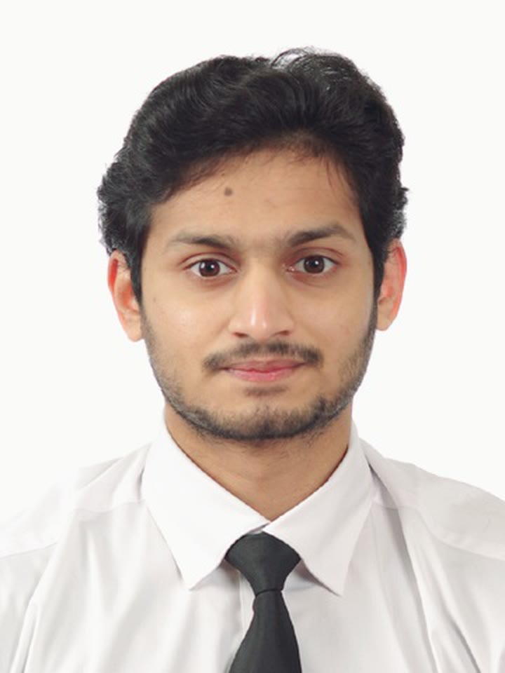
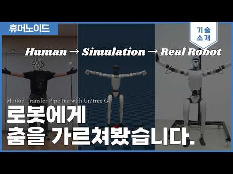
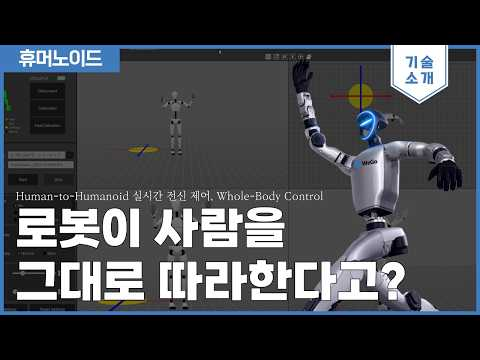
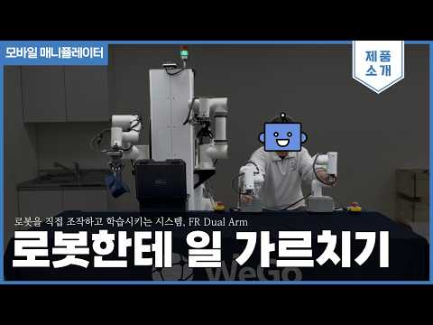

01 — PRODUCT · 2026 · LEAD
Promo film · WeGo Humanoid Studio 2.0
I'm a Senior Researcher and AI Team Lead at WeGo Robotics. I work on humanoid teleoperation, motion retargeting, and imitation and reinforcement learning, and I lead development of WeGo Humanoid Studio.

Seven projects from 2025 and 2026. The videos are my own recordings or WeGo channel videos of my work. LEAD means I led the project; CO-DEV means I built it with a teammate who led.



What I use day to day, grouped by area.
Most projects above cover one stage of the same pipeline: teleoperation, data, perception, policy and control. Click a stage for details.
Physical AI. An operator demonstrates a task by teleoperation, the robot records it, a policy is trained on the recording, and the robot runs that policy.
Five peer-reviewed papers on structural health monitoring and face recognition, from before I moved into robot learning. A humanoid-locomotion manuscript is in preparation.
Khan, S., Park, J.W., & Ham, S.
Khan, S., Won, J., Shin, J., Park, J., Park, J.W., Kim, S.E., Jang, Y., & Kim, D.J.
Le, H.V., Kim, T.U., Khan, S., Park, J.Y., Park, J.W., Kim, S.E., Jang, Y., & Kim, D.J.
Khan, S., Javed, M.H., Ahmed, E., Shah, S.A., & Ali, S.U.
Khan, S., Ahmed, E., Javed, M.H., Shah, S.A., & Ali, S.U.
From my progress reports and the AI Team's weekly dashboard. LEAD means I led the project; CO-DEV means I built it with a teammate who led. A thumbnail shows that project's own footage or screens; client and unpublished work has none.
Structural health monitoring at Chung-Ang University, mobile robots at Hanback Electronics, then humanoid robot learning at WeGo Robotics.